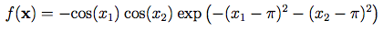
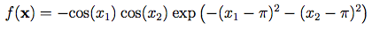

Projetos Desenvolvidos
Easom Function
 

No curso de Análise e Desenvolvimento de Sistemas, Instituto Federal do Rio Grande do Norte, Segundo período, Implementamos o algoritmo Particle Swarm Optimization, que tinha finalidade de otimizar a Easom Function. Ao final, tivemos que apresentar o projeto à banca do professor e aos colegas de classe. O Projeto é Open-Source e está disponível no meu GitHub, lá você irá conferir o código desenvolvido e imagens das melhores posições na função.